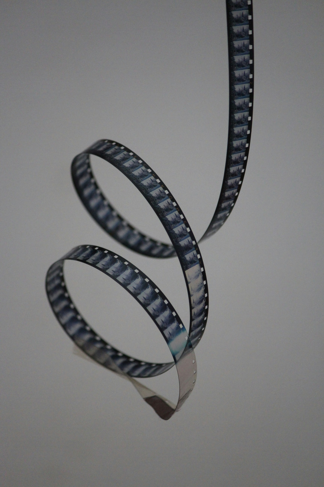

Project 2 Step 4: Where's the Beef?

In Where's the Beef? I explore the consequences of industrial agriculture on personal, cultural, and political levels. The work is a composite image made up of photographs taken by me or found on Unsplash and Adobe Stock. The work portrays a surreal landscape in which cows graze alongside cheeseburgers, gummy bears, leather steering wheels, and milk on a pasture made of burning tires as several McDonald's signs loom on the horizon. The scene is behind a barbed wire fence with an informational sign, presenting it as an attraction to passersby.
This piece critiques how a simple desire, such as the craving for beef, is connected to much larger systems and structures that are often overlooked on a personal level. The McDonald's signs tower over the pile of tires and the cattle below as if to oversee their lives. The tires, which use a byproduct of cow fat called stearic acid to retain structure, are cut from a photograph of a tire landfill in Kuwait that caught fire in April 2021. Moreover, the cattle grazing on discarded tires evoke the poor conditions that livestock endure and the pollution created by industrial agriculture. The juxtaposition of a corporate logo commonly loved by Americans against the tire landfill meant to support the lives of the cows that aided in its production highlight the aspects of consumption which are purposely hidden to encourage the black-box way of viewing purchases. I.e., consumers are not supposed to think about what happens to cows during or after slaughter, what happens to their byproducts, and what happens when waste is discarded because awareness discourages consumption, which lowers profits.
The hierarchical structures visible in the artwork emphasize the power dynamics at play, where a small elite benefits from exploitation. This power is reflected in the height from which the McDonald's signs oversee the cow pasture, illustrating the distance between what consumers are meant to see and the lives and environment impacted by brands that rely on cattle farming. Furthermore, a fence physically separates the viewer from cattle production and obscures finer details.
Through this dystopian vision, the image challenges viewers to question the sustainability of current food production systems and the broader societal values that allow such exploitation to continue. It aims to provoke reflection on our individual roles within these systems and how we might begin to envision a more humane and ecologically sound future.
Project 2 Step 3: Test composites

Project 2 Step 2: Image collection
Concept: Essentially the chicken concept but with cows.
My photographs


Textures


Found images (Unsplash)



Project 2 Step 1: Ideation
Desires/Aversions


A personal desire for cheap/inexpensive clothing can be found in a cultural desire for convenience and consumerist values that promotes arbitrary trends, fads, and fashion "seasons", which promotes a political and economic desire for profit without regard for the lives and wellbeing of the consumers and workers involved or the ecological repercussions of the fashion industry.


A personal desire for chicken develops a culture in which the mass-production of chicken as livestock is prioritized over basic human and ecological health and needs, which in turn creates a political dilemma in which hierarchies are formed to enforce a system that pumps out the most amount of chicken products and byproducts in the most profitable manner.


A personal desire for apples finds its place in a culture that gives apples a symbolic connotation (think of the Garden of Eden, Isaac Newton, and the largest tech company, and the proverb "an apple a day keeps the doctor a way"), a desire which is found on a political level more broadly in the form of agriculture and, by proxy, trade, which are the foundations of all countries in existence.